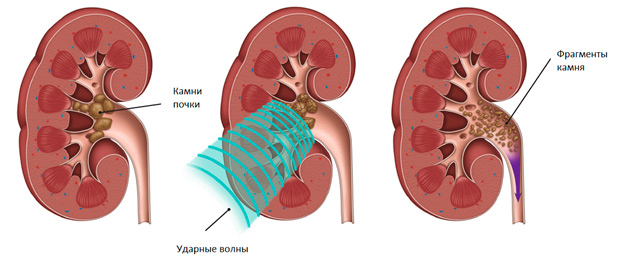

От первичной консультации до современных методов лечения мочекаменной болезни
Литотрипсия — «золотой стандарт» лечения мочекаменной болезни. Высокоэнергетические звуковые волны дробят камень на мелкие фрагменты, которые выходят из организма естественным путём.
Процедура полностью неинвазивна: без разрезов, без анестезии, без госпитализации. В тот же день вы уходите домой.

Комплексная диагностика позволяет точно определить наличие, размер и расположение камней в почках, мочеточниках и мочевом пузыре.
На основе результатов составляется индивидуальный план лечения с учётом особенностей организма.
Тщательный осмотр, сбор анамнеза, разбор всех имеющихся анализов и снимков. Вы получаете чёткий ответ о вашем состоянии и персональный план лечения.
Никаких общих рекомендаций — только индивидуальный подход и понятные объяснения.

Ответы на вопросы, которые задают пациенты чаще всего
Процедура переносится комфортно.
Во время ДУВЛ используется обезболивание. Пациент может ощущать лёгкие покалывание на коже или дискомфорт, но сильной боли обычно нет. После процедуры возможны умеренные тянущие ощущения в пояснице.
В большинстве случаев требуется 1 сеанс.
Если камень крупный или плотный, может понадобиться 2–3 процедуры для полного дробления.
Да, как и у любой медицинской процедуры. Основные противопоказания:
• беременность
• нарушение свертываемости крови
• острое воспаление почек
• очень большой камень
Решение принимается после обследования.
Перед процедурой необходимо:
• сдать анализы крови и мочи
• сделать УЗИ или КТ
• за 3–4 часа не принимать пищу
• за час до сеанса выпить 1.5 литра воды!
Точные рекомендации врач даст на консультации.
Фрагменты камня начинают выходить обычно через 1–3 дня после процедуры.
Полное очищение мочевых путей может занять от нескольких дней до 2–3 недель, в зависимости от размера и расположения камня.
Иногда выход сопровождается:
• учащённым мочеиспусканием
• тянущими болями
• небольшим количеством крови в моче
Это нормальная реакция после дробления.
Запишитесь на консультацию — подберём оптимальный метод именно для вас.
.jpeg)